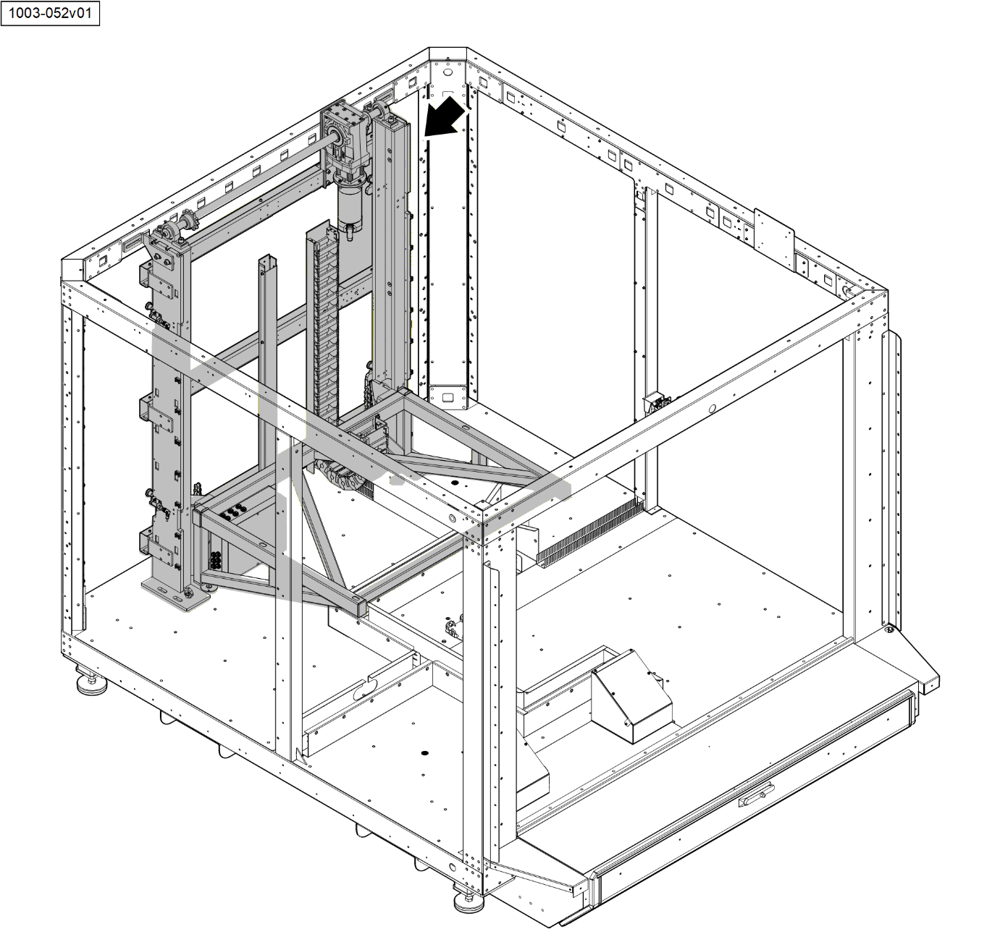

1Introduction
2Assembly and Sub-Assemblies Procedures
2.1Scope
- This section outlines the stepbystep procedures required for assembling the Lift assembly.
| Note |
|---|
| Prior to commencing assembly of each of the units described in this guide, make sure the relevant ATP documents are properly signed. Spread Loctite 243 or similar glue on all the screws unless stated otherwise. Tightening of screws will be done according to the Screw Torque Table included in this document. (See Appendix TBD). |

2.2Assembly Process
2.3Drawing List
| # | Drawing P/N | Drawing Name |
|---|---|---|
| 1 | AS230145 | LIFT ASSEMBLY |
| 2 | AS230135 | RIGHT BEAM WELDING |
| 3 | AS230137 | LEFT BEAM WELDING |
| 4 | SL230172 | Top / Middle / Bottom Horizontal beam |
| 5 | MH230046 | Roller Chain |
| 6 | SL230174 | Left Roller Base |
| 7 | SL230184 | Right Roller Base |
| 8 | AS230149 | Lift Electric Box |
| 9 | AS230140 | Cart Assembly |
| 10 | SL230192 | Vertical Wire Channel |
| 11 | SL230191 | Igus Bracket |
| 12 | IG230001 | Cable Chain (Igus) |
2.4Assembly Procedures
2.4.1Left/Right Beam Installation
2.4.1.1Left Beam Installation
2.4.1.2Left Beam Installation Part List
| # | Figure No. | P/N | Description | Qty. | Type |
|---|---|---|---|---|---|
| 1 | Figure 21 | AS230136 | Left Beam | 1 | Component |
| 2 | Figure 21 | FS230272 | DIN912 M10x30 Screw | 2 | Fastener |
| 3 | Figure 21 | FS230138 | DIN9021 M10 Washer | 2 | Fastener |
| 4 | Figure 21 | SL230171 | Lift Bracket Left | 1 | Component |
| 5 | Figure 21 | FS230374 | DIN912 M10x20 Screw | 2 | Fastener |
| 6 | Figure 21 | FS230146 | DIN125 M10 Washer | 2 | Fastener |
| 7 | Figure 21 | FS230586 | ISO7380 M5X8 Screw | 8 | Fastener |
| 8 | Figure 21 | LS230066 | Cable Tie Holder | 8 | Fastener |
2.4.1.3Left Beam Installation Procedure
.
- Install the electronic cabinet according to section TBD.
- Assemble Left Beam Welding, refer to assembly drawing AS230137.
- Position the Left Beam (1) on the UPS and FAN Electrical Assembly in its most forward position (View A) as defined by the base installation ellipse bores.
| Note |
|---|
| Do not apply Loctite on the M10 Allen-head screws (2) which secure the Left Beam (1) to the UPS and FAN Electrical Assembly |
- Using an 8 mm Allen bit, install two M10 Allen-head screws (2) and two M10 flat washers (3) which secure the Left Beam (1) to the UPS and FAN Electrical Assembly.
- Position the Lift Bracket (4) in its place on the Left Beam (1).
| Note |
|---|
| Do not apply Loctite on the M10 Allen-head screws (6) which secure the Lift Bracket (4) to Left Beam (1). |
- Using an 8 mm Allen bit, install two M10 Allen-head screws (6) and two M10 washers (5), to secure the Lift Bracket (4) to the Left Beam (1).
- Using an 8 mm Allen bit, install two Allen-head M10 screws (7) and two M10 washers (6), to secure the Lift Bracket (5) to the Left Beam (1).
- Position eight Tie Mounts (8) on the installation bores of the Beam (1).
- Using a 4 mm Allen-head bit, install eight M5 Allen-head screws (7) which secure eight Tie Mounts (8) to the Left Beam (1).
2.4.1.4Right Beam Installation
2.4.1.5Right Beam Installation Parts List
| # | Figure No. | P/N | Description | Qty. | Type |
|---|---|---|---|---|---|
| 1 | Figure 23 | AS230134 | Right Beam | 1 | Component |
| 2 | Figure 23 | LS230066 | Cable Tie Holder | 8 | Fastener |
| 3 | Figure 23 | FS230586 | ISO7380 M5X8 Screw | 8 | Fastener |
| 4 | Figure 23 | FS230272 | DIN912 M10x30 Screw | 2 | Fastener |
| 5 | Figure 23 | FS230138 | DIN9021 M10 Washer | 2 | Fastener |
| 6 | Figure 23 | SL230168 | Lift Bracket Right | 1 | Component |
| 7 | Figure 21 | Part of CH230024 | Chassis beam | 1 | Component |
| 8 | Figure 23 | FS230146 | DIN125 M10 Washer | 4 | Fastener |
| 9 | Figure 23 | FS230374 | DIN912 M10x20 Screw | 4 | Fastener |
2.4.1.6Right Beam Installation Procedure
- Assemble Right Beam Welding, refer to assembly drawing AS230135.
- Position the Right Beam (1) on the UPS and FAN Electrical Assembly in its most forward position (View D) as defined by the base installation ellipse bores.
| Note |
|---|
| Do not apply Loctite on the M10 Allen-head screws which secure the Right Beam (1) to the UPS and FAN Electrical Assembly |
- Using an 8 mm Allen bit, install two M10 Allen-head screws (4) and two M10 flat washers (5) which secure the Right Beam (1) to the UPS and FAN Electrical Assembly.
- Position the Lift Bracket (6) in its place on the Right Beam (1).
| Note |
|---|
| Do not apply Loctite on the M10 Allen-head screws (9) which secure the Lift Bracket (6) to the Right Beam (1) |
- Using an 8 mm Allen bit, install two M10 Allen-head screws (9) and two M10 washers (8), to secure the Lift Bracket (6) to the Right Beam (1).
- Position eight Tie Mounts (2) on the installation bores of the Right Beam (1).
- Using a 4 mm Allen-head bit, install eight M5 Allen-head screws (3) which secure eight Tie Mounts to the Right Beam (1).
2.4.1.7Left Index Plungers Installation
2.4.1.8Part List
| # | Figure No. | P/N | Description | Qty. | Type |
|---|---|---|---|---|---|
| 1 | Figure 24 | Part of MH230039 | Nut | -- | N/A |
| 2 | Figure 24 | Part of MH230039 | Plunger Body | -- | N/A |
| 3 | Figure 24 | Part of MH230039 | Plunger Knob | -- | N/A |
| 4 | Figure 24 | MH230039 | Index Plunger | 2 | Component |
| 5 | Figure 24 | SL230169 | Stopper | 2 | Component |
| 6 | Figure 24 | AS230136 | Left Beam | -- | N/A |
| 7 | Figure 24 | N/A | Stopper with Plunger | -- | N/A |
| 8 | Figure 24 | CC230079 | Spacer | 2 | Fastener |
| 9 | Figure 24 | FS230273 | DIN127B M10 spring washer | 2 | Fastener |
| 10 | Figure 24 | FS230283 | DIN912 M10x30 Screw | 2 | Fastener |
| # | Figure No. | P/N | Description | Qty. | Type |
| 1 | Figure 25 | AS230136 | Left Beam | -- | N/A |
| 2 | Figure 25 | SL230170 | Sensor bracket | 2 | Component |
| 3 | Figure 25 | FS230375 | DIN7991 M4x8 screw | 4 | Fastener |
| 4 | Figure 25 | EC230057 | Inductive sensor 4mm | 2 | Component |
| 5 | Figure 25 | Part of EC230057 | Sensor Nut - Part of Inductive sensor 4mm | -- | N/A |
| 6 | Figure 25 | Part of EC230057 | Locking Nut - Part of Inductive sensor 4mm | -- | N/A |
| 7 | Figure 25 | SL230169 | Stopper | -- | Component |
| 8 | Figure 25 | N/A | N/A | N/A | N/A |
| 9 | Figure 25 | MH230040 | Lifting eyebolt M6 | 2 | Component |
2.4.1.9Installation Procedure
.
- Perform Plunger Assembly as follows:
- Install Plunger Nut (2) on the Plunger (3), tighten manually till end of move.
- Install Securing Nut (1) on the Plunger (3), tighten manually till end of move.
| Note | Note |
|---|---|
| The Plunger Assy (4) threading must be flush on the other side of the Stopper (5). |
- Install the plunger assy. (4) into the stopper (5) by threading it into the designated bore.
- Secure the Plunger assy. (4) in the Stopper (5) by threading the Plunger Nut (1) towards the Stopper (5), tighten the Plunger Nut (1) to the Stopper (5) by hand force.
- Repeat steps 1.a to 1.d for the second Plunger.
- Install upper plunger as follows:
- Position the Stopper with Plunger (7) in its place on the Beam (6).
- Insert a Spacer (8) into installation bore.
- Using an 8 mm Allen-head bit, install M10 Allen-head screw (10) and spring washer (9) which secure Stopper with Plunger (7) to the Beam (6).
- Repeat steps 3.a to 3.c for lower plunger installation.
- .
- Install Upper Plunger Sensor as follows:
- Position upper Sensor Bracket (2) in its place on the Left Beam (1).
- Using a 3 mm Allen-head bit, install two M4 Allen-head screw (3) which attach Sensor Bracket (2) to the Left Beam (1).
- Thread the sensor nut (5) down until it reaches the sensor base.
- Insert the Inductive Sensor (4) into Sensor Bracket (2) installation bore.
- Thread the sensor locking nut (6) down until it reaches the sensor base.
- Measure the distance between the Inductive Sensor tip (4) and the Stopper (6).
- Adjust the distance (8) between Inductive Sensor tip (4) and the Stopper (7) to 1.25 mm ±0.25 mm by adjusting sensor nut (5) and locking nut (6).
- Using a 17 mm open-wrench, tight the plunger sensor locking nut (6) until it reaches the Sensor Bracket (2).
- Repeat steps 5.a to h for Lower Sensor Bracket.
- Install Lifting Eyebolt (9) on the Left Beam (1) by threading it into its bore.
2.4.1.10Right Index Plungers Installation
2.4.1.11Part List
| # | Figure No. | P/N | Description | Qty. | Type |
|---|---|---|---|---|---|
| 1 | Figure 24 | Part of MH230039 | Nut | -- | N/A |
| 2 | Figure 24 | Part of MH230039 | Plunger Body | -- | N/A |
| 3 | Figure 24 | Part of MH230039 | Plunger Knob | -- | N/A |
| 4 | Figure 24 | MH230039 | Index Plunger | 2 | Component |
| 5 | Figure 24 | SL230169 | Stopper | 2 | Component |
| 6 | Figure 24 | AS230134 | Right Beam | -- | N/A |
| 7 | Figure 24 | N/A | Stopper with Plunger | -- | N/A |
| 8 | Figure 24 | CC230079 | Spacer | 2 | Fastener |
| 9 | Figure 24 | FS230273 | DIN127B M10 spring washer | 2 | Fastener |
| 10 | Figure 24 | FS230283 | DIN912 M10x30 Screw | 2 | Fastener |
| # | Figure No. | P/N | Description | Qty. | Type |
| 1 | Figure 25 | AS230134 | Right Beam | -- | N/A |
| 2 | Figure 25 | SL230170 | Sensor bracket | 2 | Component |
| 3 | Figure 25 | FS230375 | DIN7991 M4x8 screw | 4 | Fastener |
| 4 | Figure 25 | EC230057 | Inductive sensor 4mm | 2 | Component |
| 5 | Figure 25 | Part of EC230057 | Sensor Nut - Part of Inductive sensor 4mm | -- | N/A |
| 6 | Figure 25 | Part of EC230057 | Locking Nut - Part of Inductive sensor 4mm | -- | N/A |
| 7 | Figure 25 | SL230169 | Stopper | -- | Component |
| 8 | Figure 25 | N/A | N/A | N/A | N/A |
| 9 | Figure 25 | MH230040 | Lifting eyebolt M6 | 2 | Component |
2.4.1.12Installation Procedure
.
- Perform Plunger Assembly as follows:
- Install Plunger Nut (2) on the Plunger (3), tighten manually till end of move.
- Install Securing Nut (1) on the Plunger (3), tighten manually till end of move.
| Note | Note |
|---|---|
| The Plunger Assy (4) threading must be flush on the other side of the Stopper (5). |
- Install the plunger assy. (4) into the stopper (5) by threading it into the designated bore.
- Secure the Plunger assy. (4) in the Stopper (5) by threading the Plunger Nut (1) towards the Stopper (5), tighten the Plunger Nut (1) to the Stopper (5) by hand force.
- Repeat steps 1.a to 1.d for the second Plunger.
- Install upper plunger as follows:
- Position the Stopper with Plunger (7) in its place on the Right Beam (6).
- Insert a Spacer (8) into installation bore.
- Using an 8 mm Allen-head bit, install M10 Allen-head screw (10) and spring washer (9) which secure Stopper with Plunger (7) to the Right Beam (6).
- Repeat steps 3.a to 3.c for lower plunger installation.
- .
- Install Upper Plunger Sensor as follows:
- Position upper Sensor Bracket (2) in its place on the Right Beam (1).
- Using a 3 mm Allen-head bit, install two M4 Allen-head screw (3) which attach Sensor Bracket (2) to the Right Beam (1).
- Thread the sensor nut (4) on the Inductive Sensor (5) until it reaches the sensor base.
- Insert the Inductive Sensor (5) into Sensor Bracket (2) installation bore.
- Thread the sensor locking nut (6) down until it reaches the Sensor Bracket (2).
- Measure the distance (7) between the Inductive Sensor tip (5) and the Stopper (2).
- Adjust the distance (7) between Inductive Sensor tip (5) and the Stopper (8) to 1.25 mm ±0.25 mm by adjusting sensor nut (4) and locking nut (7).
- Using a 17 mm open-wrench, tight the plunger sensor locking nut (7) until it reaches the Sensor Bracket (2).
- Repeat steps 5.a to h for Lower Sensor Bracket.
- Install Lifting Eyebolt (9) on the Right Beam (1) by threading it into its bore.
2.4.2Horizontal Beams
2.4.2.1Part List
| # | Figure No. | P/N | Description | Qty. | Type |
|---|---|---|---|---|---|
| 1 | Figure 28 | SL230172 | Top Horizontal beam | 1 | Component |
| 2 | Figure 28 | SL230172 | Middle Horizontal beam | 1 | Component |
| 3 | Figure 28 | SL230172 | Bottom Horizontal beam | 1 | Component |
| 4 | Figure 28 | AS230134 | Right Beam | -- | N/A |
| 5 | Figure 28 | AS230136 | Left Beam | -- | N/A |
| 6 | Figure 28 | FS230376 | DIN7991 M8x25 screw | 24 | Fastener |
2.4.2.2Installation Procedure
.
- Position Bottom Horizontal Beam (3) in its place on the Left (5) and Right (4) Beams.
- Using a 6 mm Allen-head bit, install eight (four on each side) M6 Allen-head screws (6) which secure Bottom Horizontal Beam (3) to the Left (5) and Right (4) Beams.
- Repeat steps 1 to 2 for Middle Horizontal Beam (2).
- Repeat steps 1 to 2 for Top Horizontal Beam (1).
2.4.3Drive Shaft Assembly
2.4.3.1Part List
| # | Figure No. | P/N | Description | Qty. | Type |
|---|---|---|---|---|---|
| 1 | Figure 29 | MH230048 | Gear | 1 | Component |
| 2 | Figure 29 | FS230178 | DIN985 M6 Nut | 5 | Fastener |
| 3 | Figure 29 | FS230142 | DIN125 M6 Washer | 5 | Fastener |
| 4 | Figure 29 | FS230388 | DIN912 M6x30 Screw | 5 | Fastener |
| 5 | Figure 29 | OT230012 | Motor | 1 | Component |
| 6 | Figure 29 | FS230389 | DIN985 M8 Nut | 4 | Fastener |
| 7 | Figure 29 | SL230198 | Gear Mount | 1 | Component |
| 8 | Figure 29 | FS230143 | DIN125A M8 Washer | 4 | Fastener |
| 9 | Figure 29 | FS230386 | DIN912 M8x25 Screw | 4 | Fastener |
| 10 | Figure 29 | N/A | Groove – Prat of MH230048 | -- | N/A |
| 11 | Figure 29 | CC230081 | Drive Shaft | 1 | Component |
| 12 | Figure 29 | MH230045 | Feather Key 90mm | 1 | Fastener |
| 13 | Figure 29 | MH230044 | Feather Key 28mm | 1 | Fastener |
| # | Figure No. | P/N | Description | Qty. | Type |
| 1 | Figure 210 | CC230081 | Drive Shaft | -- | N/A |
| 2 | Figure 210 | CC230082 | 12B12 Sprocket | 1 | Component |
| 3 | Figure 210 | FS230090 | DIN471 d25 Circlip | 1 | Fastener |
| 4 | Figure 210 | MH230044 | Feather Key 28mm | -- | N/A |
| 5 | Figure 29 | N/A | Groove – Prat of CC230082 | -- | N/A |
| 6 | Figure 210 | MH230047 | Housing Bearing | 1 | Component |
| 7 | Figure 210 | FS230399 | DIN9021 M12 Washer | 1 | Fastener |
| 8 | Figure 210 | FS230374 | DIN912 M10x20 Screw | 1 | Fastener |
| 9 | Figure 210 | FS230374 | DIN912 M10x20 Screw | 1 | Fastener |
| 10 | Figure 210 | FS230399 | DIN9021 M12 Washer | 1 | Fastener |
| 11 | Figure 210 | MH230047 | Housing Bearing | 1 | Component |
| 12 | Figure 210 | FS230090 | DIN471 d25 Circlip | 1 | Fastener |
| 13 | Figure 210 | CC230082 | 12B12 Sprocket | 1 | Component |
| 14 | Figure 210 | MH230044 | Feather Key 28mm | 1 | Fastener |
2.4.3.2Assembly Procedure
.
- Position Motor (5) in its place (ensuring the orientation matches the direction indicated as 5*) on the Gear (1).
- Using a 5 mm Allen-head bit and a 10 mm open-end wrench, install four M6 Allen-head screws (4), four flat washers (3) and four M6 nuts (2) which secure the Motor (5) to the Gear (1).
- Position Gear Mount (7) in its place on the Drive Shaft Gear (1).
- Using a 6 mm Allen-head bit and a 6 mm open-end wrench, install four M8 Allen-head screws (9), four flat washers (8) and four M8 nuts (6) which secure Gear Mount (7) to Drive Shaft Gear (1).
- Install 90 mm Feather Key (12) in its place on the Drive Shaft (11).
- Insert the Drive Shaft (11) into Drive Shaft Gear (1), make sure to align 90 mm Feather Key (12) with the Drive Shaft groove.
- Install 28 mm Feather Key (13) in its place on Drive Shaft (11).
- .
- Slide the Sprocket (2) onto Drive Shaft (1), make sure to align 28 mm Feather Key (4) with the Sprocket groove (5).
- Push the Sprocket (2) as to the end on Drive Shaft (1) so the Drive Shaft groove will be visible.
- Using circlip pliers, install circlip (3) in its groove on the Drive Shaft (1).
- Install Housing Bearing (6) onto Drive Shaft (1).
- Using an 8 mm Allen bit, install M10 Allen-head screw (8) and flat washer (7) which secure the Housing Bearing (6) on the Drive Shaft (1).
- On the other side of the Drive Shaft, Install 28 mm Feather Key (14) in its place on the Drive Shaft (1).
- Slide the Sprocket (13) onto Drive Shaft (1), make sure to align 28 mm Feather Key (14) with the Sprocket groove (15).
- Position the Sprocket (13) as close as possible to Drive Shaft (1) so the Drive Shaft groove will be visible.
- Using circlip pliers, install circlip (12) in its groove on the Drive Shaft (1).
- Install Housing Bearing (11) onto Drive Shaft (1).
- Using an 8 mm Allen bit, install M10 Allen-head screw (9) and flat washer (10) which secure the Housing Bearing (11) on the Drive Shaft (1).
2.4.4Drive Shaft Installation
2.4.4.1Part List
| # | Figure No. | P/N | Description | Qty. | Type |
|---|---|---|---|---|---|
| 1 | Figure 214 | MH230048 | Gear | -- | N/A |
| 2 | Figure 214 | FS230272 | DIN912 M10x30 Screw | 4 | Fastener |
| 3 | Figure 214 | FS230146 | DIN125 M10 Washer | 4 | Fastener |
| 4 | Figure 214 | AS230134 | Right Beam | -- | N/A |
| 5 | Figure 214 | AS230136 | Left Beam | N/A | |
| 6 | Figure 23 | SL230171 | Lift Bracket Left | 1 | Component |
| 7 | Figure 21 | FS230146 | DIN125 M10 Washer | 4 | Fastener |
| 8 | Figure 21 | FS230374 | DIN912 M10x20 Screw | 4 | Fastener |
| 9 | Figure 23 | SL230168 | Lift Bracket Right | 1 | Component |
| 10 | Figure 214 | SL230172 | Top Horizontal Beam | -- | N/A |
| 11 | Figure 214 | FS230143 | DIN125A M8 Washer | 6 | Fastener |
| 12 | Figure 214 | FS230385 | DIN912 M8x16 Screw | 6 | Fastener |
2.4.4.2Installation Procedure
.
- Position the Drive Shaft Assembly (1) in its place on both Vertical Rail
Beams (4 and 5).
| Note | Note |
|---|---|
| Physically adjust the Right and Left Beams (4 and 5) so the Drive Shaft Assembly installation bores aligned with Right and Left Beams (4 and 5) installation bores. |
- Using an 8 mm Allen bit, install four Allen-head screws (2) and four flat washers (3), which secure the Drive Shaft Assembly (1) to the Vertical Rail Beams (4 and 5).
- Using an 8 mm Allen bit, install two M10 Allen-head screws (8) and two M10 washers (7), to secure Left Lift Bracket (6) to the UPS and FAN Electrical Assembly.
- Using an 8 mm Allen bit, install two M10 Allen-head screws (8) and two M10 washers (7), to secure Right Lift Bracket (9) to the UPS and FAN Electrical Assembly.
- Using an 8 mm Allen bit, install two M10 Allen-head screws and two M10 flat washers which secure the Left Beam to the UPS and FAN Electrical Assembly.
- Using an 8 mm Allen bit, install two M10 Allen-head screws and two M10 flat washers which secure the Left Beam to the UPS and FAN Electrical Assembly.
- Using an 8 mm Allen bit, install two M10 Allen-head screws and two M10 flat washers which secure the Right Beam to the UPS and FAN Electrical Assembly.
- Using a 6 mm Allen bit, install six Allen-head screws (12) and six flat washers (11), which secure the Drive Shaft Assembly (1) to the upper Horizontal Beam (10).
2.4.5Closed Chain Assembly
2.4.5.1Part List
| # | Figure No. | P/N | Description | Qty. | Type |
|---|---|---|---|---|---|
| 1 | Figure 215 | FS230377 | DIN471 D6 Circlip | 1 | Fastener |
| 2 | Figure 215 | SL230193 | Pully Mount | 1 | Component |
| 3 | Figure 215 | CC230078 | Idler Shaft | 1 | Component |
| 4 | Figure 215 | FS230377 | DIN471 D6 Circlip | 1 | Fastener |
| 5 | Figure 215 | CC230077 | Chain Idler | 1 | Components |
| 6 | Figure 215 | SL230172 | Bottom Horizontal Beam | -- | N/A |
| 7 | Figure 215 | SL230193 | Pully Mount | -- | N/A |
| 8 | Figure 215 | FS230141 | DIN125 M5 Washer | 4 | Fastener |
| 9 | Figure 215 | FS230384 | DIN912 M5x10 Screw | 4 | Fastener |
2.4.5.2Assembly Procedure
.
| Note | Note |
|---|---|
| The installation bores of the Chain Idler (5) are elliptical shape to provide positioning option – position the Chain Idler (5) in the lower position as possible |
- Position Chain Idler (5) in its place in Pulley Mount (2).
- Insert Idler Shaft (3) in Pulley Mount (2) and the Chain Idler (5)
- Using circlip pliers, install two circlips (1 and 4) on the Idler Shaft (3) both ends.
- Position two Closed Chain Assemblies (7) in their place on the Bottom Horizontal Beam (6).
| Note | Note |
|---|---|
| Install the screws in the center of the oval bores on the Closed Chain Assemblies. Do not apply Loctite. |
- Using a 4 mm Allen-head bit, install eight Allen-head screws (9) and eight flat washers (8), which secure the two Closed Chain Assemblies (7) to the Horizontal Beam (6).
2.4.6Roller Chain Adjustment
2.4.6.1Part List
| # | Figure No. | P/N | Description | Qty. | Type |
|---|---|---|---|---|---|
| 1 | Figure 216 | MH230046 | Roller Chain | 1 | Component |
| 2 | Figure 216 | Part of MH230046 | Pin Assembly | 1 | -- |
| 3 | Figure 216 | MH230091 | Spring Clip | 1 | Fastener |
| 4 | Figure 216 | Part of MH230046 | Link Plate | 1 | -- |
| 5 | Figure 216 | CC230080 | Chain Centering | 1 | Component |
| 6 | Figure 216 | MH230049 | Swing Bolt M10 | 2 | Fastener |
| 7 | Figure 216 | FS230275 | DIN934 M10 Nut | 2 | Fastener |
| 8 | Figure 216 | FS230146 | DIN125 M10 Washer | 2 | Fastener |
| 9 | Figure 216 | FS230146 | DIN125 M10 Washer | 2 | Fastener |
| 10 | Figure 216 | FS230275 | DIN934 M10 Nut | 2 | Fastener |
| 11 | Figure 216 | Part of MH230046 | Connection Pin | -- | N/A |
2.4.6.2Adjustment Procedure
.
- Install one M10 nut (7) onto the Swing Bolt (6) and thread the nut down until it reaches the bolt base.
- Install two flat washers (8 and 9) onto the Swing Bolt (6).
- Install another M10 nut (10) onto the Swing Bolt (6) and thread the nut close to both flat washers (8 and 9).
- Connect the Swing Bolt (6) to the Roller Chain (1) as follows:
- Insert a Chain Centering (5) into Swing Bolt (6) bore.
- Insert Pin Assembly (2) through the Swing Bolt (6) bore and the Chain installation bores.
- Install Link Plate (4) on Pin Assembly (2) both pins.
- Install spring Clip (3) on Pin Assembly both pins (2) groove to secure the Swing Bolt (6) to the Roller Chain (1).
- Fully extend the Roller Chain (1) and measure 2.88 meters from the end, corresponding to 152 pins.
- Remove the connection pin (11) from Roller Chain 152nd pin (1).
- Repeat steps 1 to 4 to install another Swing Bolt (6) on the other end of the Roller Chain (1).
2.4.7Right/Left Roller Assembly
2.4.7.1Part List
| # | Figure No. | P/N | Description | Qty. | Type |
|---|---|---|---|---|---|
| 1 | Figure 217 | FS230398 | DIN471 d20 Circlip | 4 | Fastener |
| 2 | Figure 217 | MH230041 | Heavy Duty Wheel | 4 | Component |
| 3 | Figure 217 | CC230075 | Wheel Shaft | 4 | Component |
| 4 | Figure 217 | SL230174 SL230184 |
Left Roller Base Right Roller Base |
1 1 |
Component Component |
| 5 | Figure 217 | FS230144 | DIN125 M16 Washer | 4 | Fastener |
| 6 | Figure 217 | FS230379 | DIN985 M16 Nut | 4 | Fastener |
| 7 | Figure 217 | FS230377 | DIN471 D6 Circlip | 4 | Fastener |
| 8 | Figure 217 | SL230173 | Side Wheel Bracket | 2 | Component |
| 9 | Figure 217 | CC230076 | Side Wheel Shaft | 2 | Component |
| 10 | Figure 217 | MH230042 | Wheel | 2 | Component |
| 11 | Figure 217 | FS230377 | DIN471 D6 Circlip | 4 | Fastener |
| 12 | Figure 222 | FS230284 | mounting pin - DIN6325 D8x34 | 4 | Fastener |
| 13 | Figure 217 | FS230148 | DIN125A M6 Washer | 4 | Fastener |
| 14 | Figure 217 | CC230076 | Side Wheel Shaft | 2 | Component |
| 15 | Figure 217 | FS230380 | DIN933 M6x35 Screw | 2 | Component |
| 16 | Figure 217 | FS230321 | DIN934 M6 Nut | 2 | Fastener |
| 17 | Figure 217 | SL230178 | Tension Screw Holder | 2 | Component |
| # | Figure No. | P/N | Description | Qty. | Type |
| 1 | Figure 218 | FS230220 | DIN912 M5x12 Screw | 4 | Fastener |
| 2 | Figure 218 | FS230141 | DIN125 M5 Washer | 4 | Fastener |
| 3 | Figure 218 | SL230181 | Lift Flag | 2 | Component |
| 4 | Figure 218 | SL230183 | Lift Flag Base | 1 | Component |
| 5 | Figure 218 | SL230182 | Lift Flag Nut | 2 | Fastener |
| 6 | Figure 218 | SL230180 | Right Roller | 1 | Component |
| 7 | Figure 218 | FS230220 | DIN912 M5x12 Screw | 4 | Fastener |
| 8 | Figure 218 | FS230141 | DIN125 M5 Washer | 4 | Fastener |
| 9 | Figure 218 | FS230160 | Nut | 4 | Fastener |
2.4.7.2Assembly Procedure
.
- Perform Left Roller assembly as follows:
- Insert two Wheel Shafts (3) into Roller Base installation bores (4).
- Using a 24 mm open-end wrench, install two M16 nuts (6) and two M16 flat washers (5) which secure Wheel Shafts (3) to the Roller Base (4).
- Slide two Wheels (2) onto Wheel Shafts (3) until fully seated.
- Using circlip pliers, install one circlip (1) in its groove on each Wheel
- Shaft (3).
- Position the Side Wheel (10) at the center of the Side Wheel Bracket (8), aligned between the shaft installation bores.
- Insert Side Wheel Shaft (9) into Side Wheel Bracket (8) through the Side Wheel (10), make sure the Side Wheel Shaft (9) is positioned at the center.
- Using circlip pliers, install two circlips (7) into the groove on each Side Wheel Shaft (9) to secure the Side Wheel (10) and the shaft to the Side Wheel bracket (8).
- Position the Side Wheel Bracket (8) between two Shaft Holders, aligned between the Shaft Holders and Side Wheel Bracket installation bores.
- Insert Side Wheel Bracket Shaft (14) into Shaft Holders through the Side Wheel Bracket (8) with two M6 flat washers (13), make sure the Side Wheel Bracket Shaft (14) is positioned at the center.
- Using circlip pliers, install two circlips (11) into the groove on each Side Wheel Shaft (14) to secure the Side Wheel Bracket (8) and the shaft to the Side Wheel Bracket Shaft (14).
- Manually tread M6 nut (16) on M6 Tension Screw (15) to the end its length.
- Manually install M6 Tension Screw (15) into Tension Screw Holder (17) until M6 nut (16) touches Tension Screw Holder (17).
- Using Plastic Hammer install two mounting pins (12) into four pin bores.
- Repeat steps a to m for Right Roller assembly.
| Note | Note |
|---|---|
| Perform the following steps only for the Right Roller Assembly |
.
- Perform Lift Flag assembly as follows:
- Position two Lift Flags (3 and 6) on Lift Flag Base (4).
- Using a 4 mm Allen-head bit, install four (two on each Lift Flag) Allen-head screws (1), four flat washers (2) and two Lift Flag Nuts (5), which secure the two Lift Flags (3 and 6) to Lift Flag Base (4).
- Position Lift Flag assembly (4) in its place on Right Roller assembly (7).
- Using a 4 mm Allen-head bit, install four Allen-head screws (8) and four flat washers (9), which secure the Lift Flag assembly (4) to Right Roller assembly (7).
2.4.8Right/Left Roller Installation
2.4.8.1Part List
| # | Figure No. | P/N | Description | Qty. | Type |
|---|---|---|---|---|---|
| 1 | Figure 219 | AS230134 | Right Beam | -- | Component |
| 2 | Figure 219 | AS230147 | Right Roller | -- | Component |
| 3 | Figure 219 | AS230146 | Left Roller | -- | Component |
| 4 | Figure 219 | AS230136 | Left Beam | -- | Component |
2.4.8.2Installation Procedure
.
- Position Right Roller Assembly (2), Left Roller Assembly (3) so that their wheels are located inside the right (1) and left (4) vertical rail beams.
2.4.9Cart Assembly
2.4.9.1Part List
| # | Figure No. | P/N | Description | Qty. | Type |
|---|---|---|---|---|---|
| 1 | Figure 220 | AS230149 | Lift Electric Box | 1 | Component |
| 2 | Figure 220 | Part of AS230149 | Philips-head screws | 6 | Component |
| 3 | Figure 220 | Part of AS230149 | Lift Electric Box Cover | 1 | Fastener |
| 4 | Figure 220 | AS230140 | Cart Assembly | 1 | Component |
| 5 | Figure 220 | FS230278 | DIN912 M4x8 Screw | 4 | Fastener |
| # | Figure No. | P/N | Description | Qty. | Type |
| 1 | Figure 221 | SL230187 | Igus Chain Bracket | - | Component |
| 2 | Figure 221 | SL230190 | Igus U Bracket | 1 | Component |
| 3 | Figure 221 | FS230141 | DIN125 M5 Washer | 4 | Fastener |
| 4 | Figure 221 | FS230384 | DIN912 M5x10 Screw | 4 | Fastener |
| 5 | Figure 221 | SL230186 | Feet Bracket | - | Component |
| 6 | Figure 221 | Part of MH230043 | Nut | 2 | Fastener |
| 7 | Figure 221 | MH230043 | Leveling Foot | 2 | Component |
| 8 | Figure 221 | LS230021 | NIL Ribbed Tube End Plug | 4 | Component |
2.4.9.2Installation Procedure
.
- Install Lift Electric Box (1) as follows:
- Using a Philips-head bit, remove six Philips-head screws (2) which secure Lift Electric Box Cover (3) to the Lift Electric Box (1).
- Remove Lift Electric Box Cover (3) from the Lift Electric Box (1).
- Position Lift Electric Box (1) on the Electrical Box Holder (4) which welded to the Cart Assembly.
- Using a 3 mm Allen-head bit, install four M4 Allen-head screws (5) which secure Lift Electric Box (1) to the Electrical Box Holder (4).
- Position Lift Electric Box Cover (3) in its place on the Lift Electric Box (1).
- Using a Philips-head bit, install six Philips-head screws (2) which secure Lift Electric Box Cover (3) to the Lift Electric Box (1).
- .
- Install Igus U Bracket (2) as follows:
- Position Igus U Bracket (2) in its place on the Chain Bracket (1).
- Using a 4 mm Allen-head bit, install four M5 Allen-head screws (4) and four M5 flat washers (3) which secure Igus Bracket (2) to the Chain Bracket (1).
- Insert two Cart Leveling Foots (7) into Feet Bracket (5) installation bores.
- Using a 13 mm open-end wrench, release (CCW) the M8 Leveling Nut (6) and fully tighten Cart Leveling Foot (7).
- Using a 13 mm open-end wrench, tighten (CCW) the M8 Leveling Nut (6).
- Install four End-Plugs (8) into four Cart corners.
2.4.10Cart Installation
2.4.10.1Part List
| # | Figure No. | P/N | Description | Qty. | Type |
|---|---|---|---|---|---|
| 1 | Figure 222 | AS230147 AS230146 |
Right Roller Left Roller |
1 | Component |
| 2 | Figure 222 | FS230284 | mounting pin - DIN6325 D8x34 | 4 | Fastener |
| 3 | Figure 222 | AS230140 | Cart Assembly | 1 | Component |
| 4 | Figure 222 | FS230143 | DIN125 M8 Washer | - | Fastener |
| 5 | Figure 222 | FS230386 | DIN912 M8x25 Screw | 4 | Fastener |
2.4.10.2Installation Procedure
- .
- Mount the Cart Assembly (3) on Right and Left Rollers (1), make sure that four mounting pins (2) are inserted into four bores on Right and Left Rollers (1).
- Using a 6 mm Alen-head bit, install eight M8 Allen-head screws (5) and eight M8 flat washers (4) which secure Cart Assembly (3) to Right and Left Rollers (1).
2.4.11Right/Left Roller Chain Installation
2.4.11.1Part List
| # | Figure No. | P/N | Description | Qty. | Type |
|---|---|---|---|---|---|
| 1 | Figure 223 | MH230049 | Swing Bolt M10 | -- | Fastener |
| 2 | Figure 223 | AS230147 AS230146 |
Right Roller Left Roller |
-- | Component |
| 3 | Figure 223 | FS230146 | DIN125 M10 Washer | -- | Fastener |
| 4 | Figure 223 | FS230275 | DIN934 M10 Nut | -- | Fastener |
| 5 | Figure 223 | CC230082 | Sprocket | -- | Component |
| 6 | Figure 223 | MH230046 | Roller Chain | -- | Component |
| 7 | Figure 223 | AS230143 | Closed Chain Assembly | -- | Component |
| 8 | Figure 223 | CC230077 | Idler | -- | Component |
| 9 | Figure 223 | MH230049 | Swing Bolt M10 | -- | Fastener |
| 10 | Figure 223 | AS230147 AS230146 |
Right Roller Left Roller |
-- | Component |
| 11 | Figure 223 | FS230146 | DIN125 M10 Washer | -- | Fastener |
| 12 | Figure 223 | FS230275 | DIN934 M10 Nut | -- | Fastener |
2.4.11.2Installation Procedure
- .
- Install Left Roller Chain as follows:
- Remove one M10 nut (4) and one flat washer (3) from the Swing Bolt (1).
- Insert the Swing Bolt (1) into Roller Primary Rib (2) installation bore.
- Install one M10 nut (4) and one flat washer (3) onto the Swing Bolt (1) and thread the nut down until it reaches the Roller Primary Rib (2).
- Route the Roller Chain (6) upwards to the Drive Shaft Sprocket (5).
- Install the Roller Chain (6) on the Drive Shaft Sprocket (5).
- Apply tension to the Roller Chain (6) and position it so the links fully engage the Drive Shaft Sprocket (5) teeth encircling it.
- Ensure the Roller Chain (6) is properly seated and aligned on the Drive Shaft Sprocket (5).
- Route the Roller Chain (6) downward through the Closed Chain Assembly (7) behind the chain Idler (8).
- Remove one M10 nut (12) and one flat washer (11) from the Swing Bolt (9)
- Insert the Swing Bolt (9) into Lower Roller Rib (10) installation bore.
- Install M10 nut (12) and flat washer (11) onto the Swing Bolt (9) and thread the nut down until it reaches the Lower Roller Rib (10).
- Repeat steps 1.a to step 1.k to install the Right Roller Chain.
- Apply Loctite LB8101 on both Roller Chains.
- Position Right and Left Rollers at the lower position by operating the Roller Chains.
- Using a 4 mm Allen bit, tighten eight Allen-head screws and eight flat washers, which secure the two Closed Chain Assemblies to the Horizontal Beam.
2.4.12Cable Chain (Igus) and Vertical Wire Chanel
2.4.12.1Part List
| # | Figure No. | P/N | Description | Qty. | Type |
|---|---|---|---|---|---|
| 1 | Figure 224 | SL230192 | Vertical Wire Channel | 1 | Component |
| 2 | Figure 224 | LS230066 | Cable Tie Holder | 7 | Component |
| 3 | Figure 224 | FS230586 | ISO7380 M5X8 Screw | 7 | Fastener |
| 4 | Figure 224 | SL230172 | Middle Horizontal beam | - | Component |
| 5 | Figure 224 | SL230172 | Bottom Horizontal beam | - | Component |
| 6 | Figure 224 | FS230142 | DIN125 M6 Washer | 4 | Fastener |
| 7 | Figure 224 | FS230383 | DIN912 M6x12 Screw | 4 | Fastener |
| # | Figure No. | P/N | Description | Qty. | Type |
| 1 | Figure 225 | SL230172 | Middle Horizontal beam | - | Component |
| 2 | Figure 225 | SL230172 | Bottom Horizontal beam | - | Component |
| 3 | Figure 225 | SL230191 | Igus Bracket | 1 | Component |
| 4 | Figure 225 | FS230142 | DIN125 M6 Washer | 4 | Fastener |
| 5 | Figure 225 | FS230383 | DIN912 M6x12 Screw | 4 | Fastener |
| # | Figure No. | P/N | Description | Qty. | Type |
| 1 | Figure 226 | FS230212 | DIN985 M5 Nut | 2 | Fastener |
| 2 | Figure 226 | FS230141 | DIN125 M5 Washer | 2 | Fastener |
| 3 | Figure 226 | SL230191 | Igus Bracket | 1 | Component |
| 4 | Figure 226 | IG230001 | Cable Chain (Igus) | 1 | Component |
| 5 | Figure 226 | FS230199 | DIN912 M5x16 Screw | 2 | Fastener |
| 6 | Figure 226 | FS230212 | DIN985 M5 Nut | 2 | Fastener |
| 7 | Figure 226 | FS230141 | DIN125 M5 Washer | 2 | Fastener |
| 8 | Figure 226 | SL230190 | Igus U Bracket | - | Component |
| 9 | Figure 226 | IG230001 | Cable Chain (Igus) | - | Component |
| 10 | Figure 226 | FS230199 | DIN912 M5x16 Screw | 2 | Fastener |
2.4.12.2Installation Procedure
.
- Install Vertical Wire Channel (1) as follows:
- Position seven Tie Mounts (2) in its place on the Vertical Wire Channel (1).
- Using a 4 mm Allen-head bit, install seven M5 Allen-head screws (3) which secure seven Tie Mounts (2) to the Vertical Wire Channel (1).
- Position Vertical Wire Channel (1) in its place on the Middle (4) and Bottom (5) Horizontal Beams.
- Using a 5 mm Allen-head bit, install four M6 Allen-head screws (7) and four M6 flat washers (6) which secure Vertical Wire Channel (1) to the Middle (4) and Bottom (5) Horizontal Beams.
- .
- Install Igus Bracket (3) as follows:
- Position Igus Bracket (3) in its place on the Middle (1) and Bottom (2) Horizontal Beams.
- Using a 5 mm Allen-head bit, install four Allen-head screws (5) and four flat washers (3) which secure Igus Bracket (1) to the Middle (2) and Bottom (5) Horizontal Beams.
.
- Install Cable Chain (Igus) (4) as follows:
- Position one side of the Igus (4) in its place on the Igus Bracket (3).
- Using a 4 mm Allen-head bit and an 8 mm open-end wrench, install two Allen-head screws (5), two flat washers (2) and two nuts (1) which secure Igus (4) to the Igus Bracket (3).
- Route the other end Igus and position Igus part on the outer side of the Igus Bracket (8).
- Using a 4 mm Allen-head bit and an 8 mm open-end wrench, install two Allen-head screws (10), two flat washers (7) and two nuts (6) which secure Igus (9) to the Igus Bracket (8).
2.4.13Safe Sensor Cascade and Inductive Sensors
2.4.13.1Part List
| # | Figure No. | P/N | Description | Qty. | Type |
|---|---|---|---|---|---|
| 1, 2 | Figure 227 | SL230172 | Upper and Lower Horizontal Beams | - | Component |
| 3 | Figure 227 | EC230057 | Inductive Sensor, 4mm, PNP, NC, 10-30VDC | 2 | Component |
| 4 | Figure 227 | Part of EC230057 | M10 nut | - | Fastener |
| 5 | Figure 227 | SL230172 | Middle Horizontal Beam | - | Component |
| 6 | Figure 227 | SL230141 | Flexi loop holder | 2 | Fastener |
| 7 | Figure 227 | FS230200 | DIN7991 M4x10 | 4 | |
| 8 | Figure 227 | EC230080 | Safe Sensor Cascade, Flexi Loop | 2 | Component |
| 9 | Figure 227 | EC230160 | Safe Sensor Cascade | 1 | Component |
2.4.13.2Installation Procedure
.
- Install Top Inductive Sensor (3) on the Upper Horizontal Beam (1) as follows:
- Insert the Inductive Sensor (3) into Top Horizontal Beam installation bore.
- Tighten M10 nut (4) onto the Inductive Sensor (3) and thread the nut down until it reaches the Upper Horizontal Beam (1).
- Repeat steps a to b for Bottom Inductive Sensor.
- Position two Flexi Loop Holders (6) in its place on the Middle Horizontal Beam (5).
- Using a 3 mm Allen-head bit, install four M4 Allen-head screws (7) which secure two Flexi Loop Holders (6) to the Middle Horizontal Beam (5).
- Install Safe Sensor Cascade (9) into one Safe Sensor Cascade (8) MS connector.
| Note | Note |
|---|---|
| The Safe Sensor Cascade Flexi Loop (9) with the Safe Sensor Cascade (10) inserted into the left Flexi Loop Holder (6) |
- Insert two Safe Sensor Cascade Flexi Loop (8 and 9) into two Flexi Loop Holders (6).
2.4.14Lift Assembly Calibrations
.
- Left and Right Roller Assembly Calibration:
- Connect Motion Jig to the Drive Shaft Motor connector, for Motion Jig Connection refer to OPT1-D-063.
- Lift the Lift Assembly 50 cm above the ground.
- Measure the distance between the Roller Base (2) and the Side Beam (1).
- Adjust the distance between Roller Base (2) and the Side Beam (1) to 3 mm as follows:
- Using a 5 mm open-end wrench, release M6 nut (3).
- Using a 5 mm open-end wrench, adjust the distance between Roller Base (1) and the Side Beam (2) by turning the M6 Fastner
Screw (4):- Turn CW to increase the distance.
- Turn CCW to decrease the distance.
- Using a 5 mm open-end wrench, tighten M6 nut (3).
- Repeat steps a to d for the other Roller Assembly (Left).
- .
- Inductive Sensors Calibration:
- Connect Motion Jig to the Drive Shaft Motor connector, for Motion Jig Connection refer to OPT1-D-063.
- Lower the Lift Assembly to the lower position.
- Using filler gauge, measure the distance between the Inductive Sensor tip (2) and the Flags Assembly (1).
- Adjust the distance between Inductive Sensor tip (2) and the Flags Assembly (1) to 1.25 mm ± 0.25 mm:
- Using a 17 mm open-end wrench, release two M10 nuts (3, 4), one from each side of the horizontal beam (5).
- Position Inductive Sensor tip (2) at 1.25 mm ± 0.25 mm from the Flags Assembly (1).
- Using a 17 mm open-end wrench, tighten two M10 nuts (3, 4).
- Lift the Lift Assembly to the upper position.
- Repeat steps c and d for the upper Inductive Sensor.